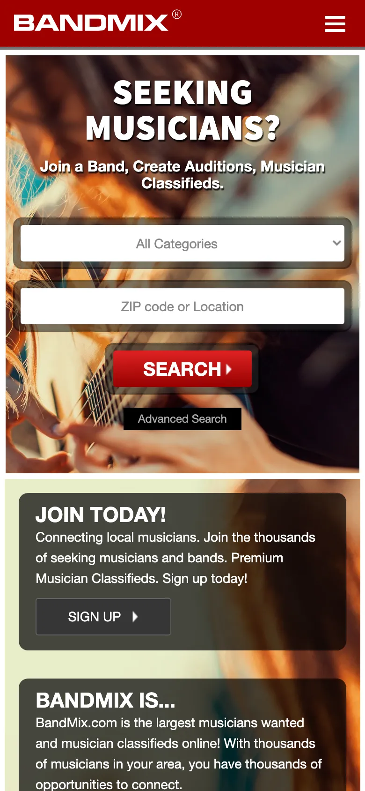
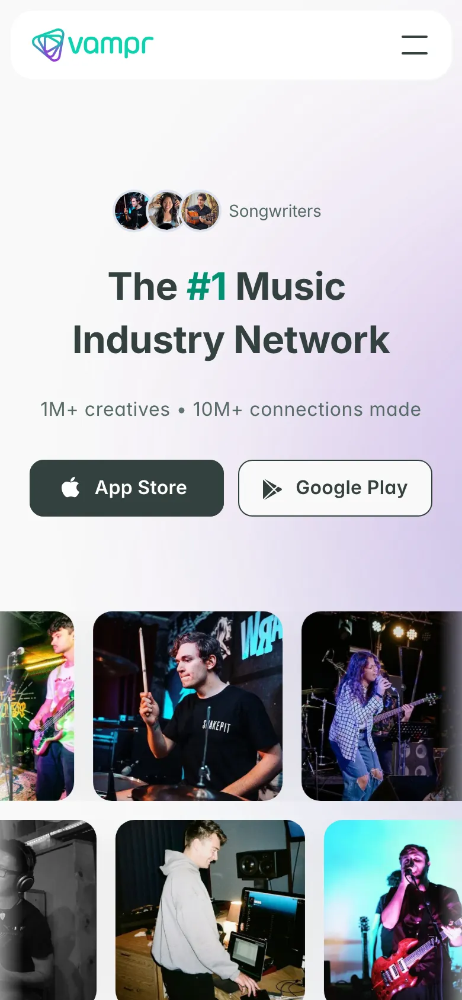
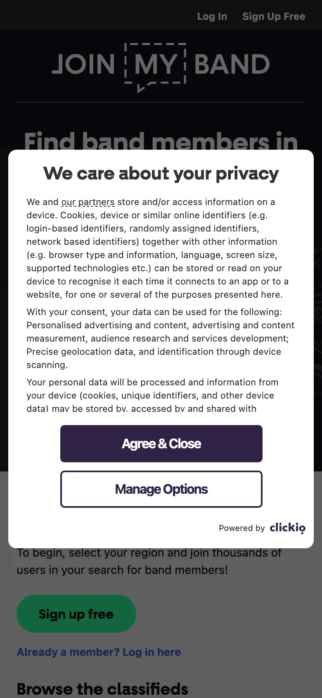

Trois plateformes comparables ont été auditées le 8 juin 2026, plus la solution informelle de référence (les groupes Facebook). Pour chacune des trois plateformes : une capture réelle de la page d’accueil, un relevé des signaux de structure et de référencement (langue, méta-description, titres, alternatives d’images) et un audit d’accessibilité automatisé avec axe-core, exactement le même outil et les mêmes règles WCAG que pour Giggr. On en tire, plateforme par plateforme, les forces, les faiblesses, et les similitudes et différences avec Giggr.
Les groupes Facebook, derrière authentification, ne sont pas audités automatiquement, mais restent la pratique la plus répandue aujourd’hui.
bandmix.com ↗ · annonces de musiciens (États-Unis)
Le concurrent le plus proche de Giggr : des petites annonces de musiciens et de groupes, cherchables par instrument et par localisation (code postal). La barre de recherche « Qui cherchez-vous ? + lieu » occupe le centre de la page d’accueil — exactement l’action centrale de Giggr.

Face à Giggr. Même logique de recherche par instrument et par ville (similitude). Mais Giggr ouvre le contact gratuitement via une messagerie intégrée, vise un public local (Belgique) et soigne l’accessibilité (0 violation contre 81 nœuds).
vampr.me ↗ · réseau social de musiciens (application mobile)
Un réseau social pour musiciens, fondé sur un appariement par profil (logique proche du « swipe »). C’est avant tout une application mobile : le site web n’est qu’une vitrine de téléchargement (App Store, Google Play).

Face à Giggr. Même objectif de mise en relation de musiciens par profils (similitude). Mais Giggr est une application web (aucune installation), avec des filtres explicites (instrument, ville) plutôt qu’un appariement opaque, et un ancrage local.
joinmyband.co.uk ↗ · annonces de musiciens (Royaume-Uni)
Un site d’annonces gratuit pour musiciens, façon tableau d’annonces classique. Sobre techniquement, mais resté à une esthétique d’un autre âge.

Face à Giggr. Mêmes annonces gratuites, publier et parcourir (similitude). Mais Giggr propose des profils structurés, un filtrage par instrument et ville, une messagerie intégrée et une interface moderne, là où JoinMyBand reste un simple fil d’annonces.
solution informelle · non auditée (accès derrière authentification)
La pratique la plus répandue aujourd’hui : poster dans des groupes locaux de musiciens. C’est gratuit et l’audience est déjà là, mais sans aucun filtre par instrument ou par ville : l’information est dispersée, noyée dans le fil, sans fiche ni mise en relation cadrée. C’est précisément le manque que Giggr comble — centraliser, structurer et filtrer.
Synthèse chiffrée, avec Giggr en regard. La colonne accessibilité reprend le nombre de nœuds en échec à l’audit axe-core de la page d’accueil (au 8 juin 2026).
| Plateforme | Type | Recherche instrument + lieu | Prise de contact | Accessibilité (axe, accueil) |
|---|---|---|---|---|
| BandMix | Annonces web | Oui, centrale | Payante (Premium) | 81 nœuds |
| Vampr | App mobile (web = vitrine) | Non (appariement) | Dans l’application | 15 nœuds |
| JoinMyBand | Annonces web | Basique | Gratuite | 0 |
| Groupes Facebook | Réseau généraliste | Non | Messagerie Facebook | non audité |
| Giggr | App web | Oui (filtres) | Messagerie intégrée, gratuite | 0 |
Aucune solution ne réunit à la fois la recherche locale par instrument, la prise de contact gratuite et une interface moderne et accessible : les annonces sont soit payantes au contact (BandMix), soit datées (JoinMyBand), soit enfermées dans une application au matching opaque (Vampr), soit dispersées sans structure (Facebook). Giggr se positionne précisément sur cette place laissée vacante — des choix directement issus des besoins relevés dans la recherche utilisateur.